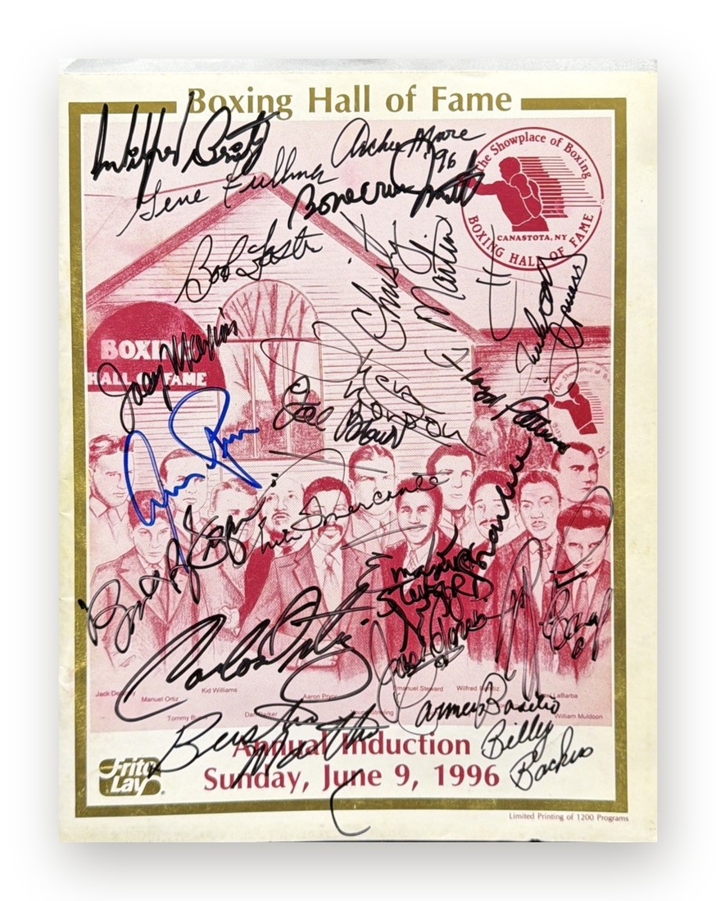
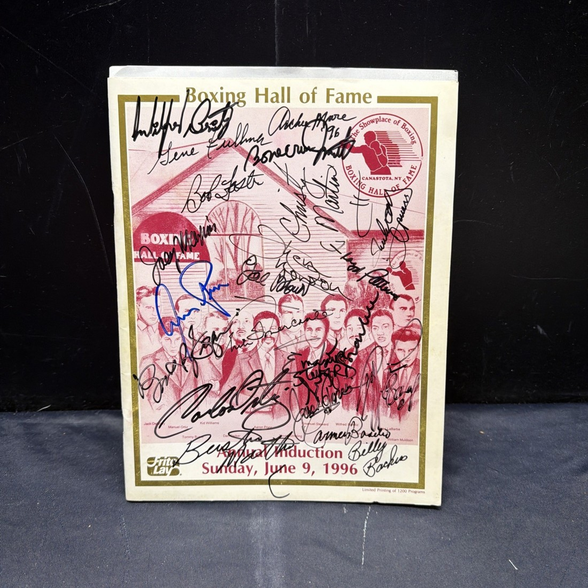

Внутренний стандарт · Как мы собираем деки
Канон Stargift:
формат и кухня
Каждый разворот показан дважды: сначала слайд, каким его видит клиент, затем — исходное фото продавца, промпт или команда и результат.
август 2026
4
способа получить чистый кадр: nano banana pro, геометрическое выравнивание, отбеливание фона и честные макро-фрагменты.
Один промпт на все предметы. Ни одного перерисованного автографа.

Формат · Слайд лота
Альбом Thriller с автографом Майкла Джексона
Epic Records · 1982
Самый продаваемый альбом в истории музыки. Подпись синим маркером
по лаковому конверту первого пресса.
Фото занимает ровно половину слайда, текст стоит на воздухе справа:
название, контекст первым абзацем, цена золотом. Кегли — от 18 px, дека читается с телефона.
1 500 000 ₽
PSA/DNA

Формат · Слайд лота
Программа Зала боксёрской славы, 1996 год, 22 автографа
Канастота · 9 июня 1996
Плоский лот, весь смысл которого — подписи. Такому генерация
противопоказана: ракурс исправлен геометрией, пиксели настоящие.
Внешне слайд не отличается от соседнего — и не должен: клиент видит один
стандарт подачи, каким бы путём ни был получен кадр.
700 000 ₽
JSA
Кухня: ракурс правится без нейросети
tools_flatten.py · перспективный варп
Было · тёмная ткань продавца, наклон, перспектива

Стало · те же пиксели, развёрнутые фронтально
Команда вместо промпта: находим четыре угла листа и разворачиваем. Подписи не перерисовываются в принципе
python3 tools_flatten.py --mode=bright --out=img_box/flat img_box/orig_hof96_22.jpg
python3 tools_halfslide.py --out=img_box/half img_box/flat/orig_hof96_22.jpg
Формат · Слайд лота
Пара перчаток Everlast: Тайсон, Льюис, Леонард, Хирнс, Дюран
Состаренная кожа · пара
Объёмный предмет на сером фоне продавца. Вырезать нельзя —
жёсткая маска рвёт кромку. Фон уведён в белый без границы.
Трое из пяти подписавших — «Четыре короля» восьмидесятых. Пара на подставке —
объект, а не сувенир.
550 000 ₽
Beckett
Кухня: макро без выдумки
tools_box_details.py · фрагменты того же листа
Было · один кадр объявления на весь лот

Стало · фрагмент 1:1 под пропорцию ячейки слайда
Центр и ширина фрагмента задаются в долях предмета; границы предмета инструмент находит сам
SPEC = {"hof96_22": [(0.31, 0.22, 0.62), (0.69, 0.79, 0.62)]} # (cx, cy, ширина)
python3 tools_box_details.pyПять правил, которые держат всё: одно фото — один слайд; фото лота не кропать; кегли не уменьшать; про подлинность не писать; автограф не перерисовывать.
stargift.ru
PHOTO_RULES.md · CLAUDE.md